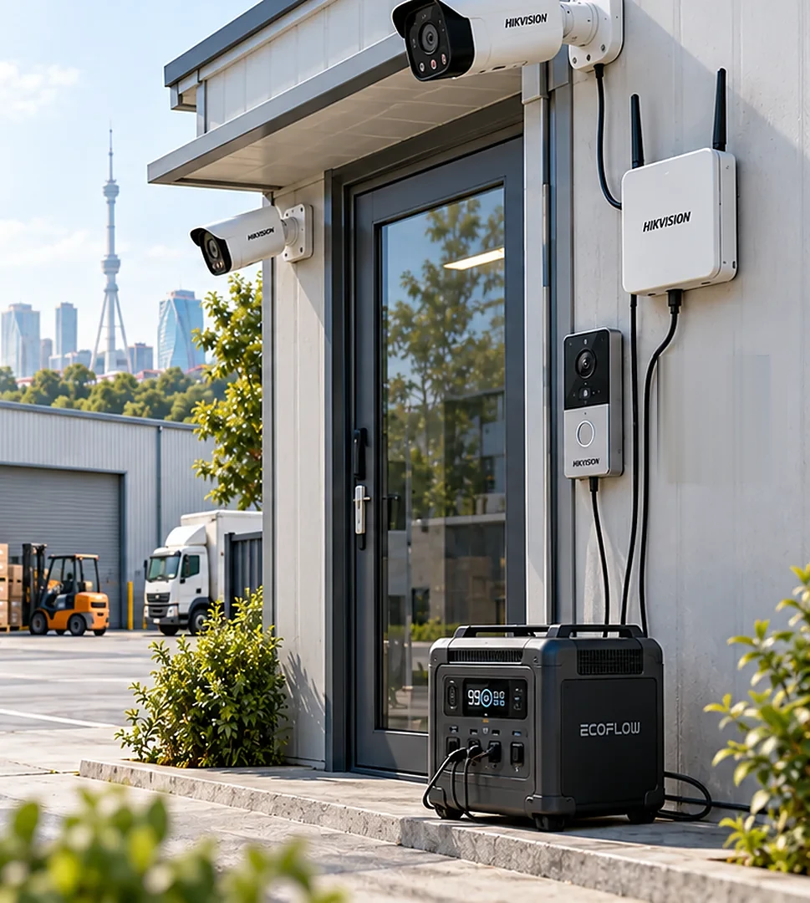

Panel qo'yishga ruxsat ham, vaqt ham yo'q bo'lganda komplekt chemodanda olib boriladi va ikki soatda ishga tushadi. Quvvat masalasi bitta savolga qisqaradi: bo'shagan stansiyani kim va qachon almashtiradi.
20 Vtbutun komplekt yuki
3,1 kun2 kVt·soat qishda
40 daqalmashtirish vaqti
7–16 mlnkomplekt narxi

Ko'chma stansiya, ikki SIM'li 4G router va eshik oldidagi video domofon
01
Chemodandagi komplekt
Komplekt bazada to'liq yig'iladi va sozlanadi. Obyektga sozlanmagan jihoz olib borilmaydi: bir soatlik ish yarim kunga cho'zilishining eng ko'p uchraydigan sababi shu.
Qism
Nima qiladi
Talab
Dona
LiFePO4 ko'chma stansiya
Butun komplektni oziqlantiradiBazada zaryadlanadi, obyektda razryad bo'ladi
1–4 kVt·soat, 12 V DC chiqish kamida 10 A, ochiq API
2
IP kamera
Kirish, hovli va ichki xonani ko'radi
ONVIF, SD karta, IR bilan 5 Vt gacha
2–4
PoE kommutator
Kameralarni bitta kabel bilan oziqlantiradi
12–24 V DC kirish, 4–5 port
1
Ikki SIM'li 4G router
Tunnelni ushlab turadi, aloqa uzilsa o'zi qayta ulanadi
9–30 V DC kirish, watchdog, VPN
1
Video domofon
Eshik oldidagi chaqiruv va ikki tomonlama gaplashish
SIP yoki ilova orqali, rele chiqishi bilan
0–1
Qulflanadigan po'lat quti
Stansiyani o'g'irlikdan saqlaydi
Polga yoki devorga ankerlanadi, ochilish datchigi bilan
1
Har komplektga raqam beriladi, masalan KMP-03. Platformada komplekt ayni damda qaysi obyektda turgani va uning zaryadi doim ko'rinadi.
Qurilmalar faqat 12 V DC chiqishdan oziqlanadi. AC rozetka ishlatilsa, bo'sh turgan invertorning o'zi o'nlab vatt yeydi va avtonomiya ikki baravar qisqaradi.
02
Almashtirish kuni: 14-yanvar
Uchinchi kun. Stansiya tunda 38 foizga tushgan va platforma almashtirish vazifasini allaqachon ochgan. Kun shu vazifa bilan boshlanadi va shu bilan yopiladi.
00:00tun
Stansiya 38 foizda
Tashqarida −9 °C, qulflangan xonada +2 °C. Yuk o'zgarmas: ikki kamera IR bilan 10 Vt, router 5 Vt, domofon kutish rejimida 3 Vt, datchiklar hubi 2 Vt. Stansiya chiqishida 20 Vt, sutkasiga 0,48 kVt·soat.
Qolgan zaxira: taxminan 19 soat
05:30sovuq
Sig'im sovuqda qisqaradi
Xonada harorat +1 °C ga tushadi. LiFePO4 bu haroratda razryad bera oladi, lekin foydali sig'im nominaldan 8–10 foiz kam chiqadi. Shuning uchun almashtirish jadvali 3 kunga tuziladi: yozgi hisobdagi 3,5 kun yanvarda obyektni bir kecha nazoratsiz qoldiradi.
08:15vazifa
Zaryad 30 foizdan pastga tushadi
Adapter stansiya telemetriyasini har daqiqada o'qiydi. 30 foiz chegarasida platforma «komplektni almashtirish» vazifasini ochadi, muddatni 12 soat qilib qo'yadi va viloyat xo'jalik bo'limiga biriktiradi. 15 foizda vazifa shoshilinchga o'tadi va bo'lim boshlig'iga ham ketadi.
11:40hodisa
Hovliga notanish mashina kiradi
Kamera harakatni aniqlaydi va klipni o'zi SD kartaga yozadi, bir vaqtning o'zida kadrni routerdan o'tkazib yuboradi. Operator jonli oqimni ochadi va domofon karnayidan ogohlantirish beradi. Bu 40 soniyalik epizod stansiyadan 0,01 kVt·soat oladi — jadvalga ta'sir qilmaydi.
15:05almashish
To'la stansiya keladi
Xodim qutini ochadi, to'la stansiyani ulaydi, bo'shaganini oladi. Kameralar 12 V liniyasi uzilgan 20 soniya ichida o'chadi va qayta yonadi; platformada bu «qisqa uzilish» bo'lib qoladi, hodisa ochilmaydi. Komplekt raqami va yangi zaryad reyestrga yoziladi.
Joyda ish: 40 daqiqa, bitta xodim
19:30baza
Bo'shagan stansiya bazada
Sovuqdan kelgan stansiya darhol zaryadga qo'yilmaydi: korpusda kondensat bo'ladi va LiFePO4 0 °C dan past zaryadlanmaydi. Ikki soat issiq xonada turadi, keyin zaryadga ulanadi. To'lish 2,5–4 soat, ertalabga tayyor.
03
Dekabr balansi: quyosh yo'q, faqat sig'im
Bu yagona yechim bo'lib, unda quyosh umuman hisobga olinmaydi. Dekabrning qisqa kuni ham, bulutli hafta ham jadvalni o'zgartirmaydi: hamma narsani sig'im va qatnov belgilaydi.
Hisobda sig'imning 85 foizi olingan: BMS chegarasi va DC o'zgartkich yo'qotishi. Qishki ustunlar yana 10 foizga qisqartirilgan.
Qatnov hisobi
Uch kunlik jadval oyiga o'nta qatnov beradi. Bitta qatnov transport va xodim vaqti bilan 150–300 ming so'mga baholanadi, ya'ni oyiga 1,5–3 mln. Ikki-uch oydan keyin bu logistika 04-yechimning statsionar shkafidan ham, 02-yechimning quyosh-4G kamerasidan ham qimmatga tushadi.
Nega ikkita stansiya
Bitta stansiya bilan ishlab bo'lmaydi: u obyektdan olinganidan keyin to'lguncha obyekt nazoratsiz qoladi. Shuning uchun har komplektda ikkita stansiya bo'ladi — biri ishlaydi, ikkinchisi bazada zaryadlanadi. Smetadagi eng katta qator ham shu.
04
Video bir yo'ldan, quvvat boshqa yo'ldan keladi
Bu yechimda ikkita mustaqil kanal bor va ularni ajratib tushunish kerak. Video va hodisa bank tunnelidan o'tadi; stansiya zaryadi esa ishlab chiqaruvchi buluti orqali keladi. Yashil halqali bo'g'inni bosing.
Stansiya holati bulut orqali o'tadi, ammo bu biometrik ma'lumot emas va O'RQ-1125 lokalizatsiya talabi bu kanalga tegmaydi. Video bulutga umuman chiqmaydi.
05
Operator nima ko'radi va nima qila oladi
Bu yechimda operator ekranida odatiy video nazoratdan tashqari yana bitta ustun bor: komplektning zaryadi va keyingi almashtirish muddati. Ustun komplekt kartochkasiga bog'lanadi, chunki komplekt obyektdan obyektga ko'chib yuradi.
Ko'rsatkich
Manbasi
Yangilanishi
Jonli video va arxiv
Kamera RTSP orqali, arxiv SD kartada
Talab bo'yicha
Harakat hodisasi va kadr
Kameraning o'z analitikasi
Darhol
Stansiya zaryadi, foizda
Ishlab chiqaruvchi API'si
1 daq
Chiqish quvvati, Vt
Ishlab chiqaruvchi API'si
1 daq
Batareya harorati
Ishlab chiqaruvchi API'si
1 daq
Aloqa holati
Router SNMP va tunnel holati
30 s
Komplekt qaysi obyektda
Qurilmalar reyestri
Almashtirishda
Masofadan qilinadi
Jonli oqimni ochish, arxivdan klip so'rash, domofon orqali gaplashish va karnaydan ogohlantirish berish. Kamerani qayta yuklash. Almashtirish vazifasini boshqa xodimga o'tkazish va muddatini o'zgartirish.
Qilib bo'lmaydi
Stansiyani masofadan zaryadlash yoki uni o'chirib-yoqish. Zaryad tugasa, obyekt nazoratdan chiqadi va buni faqat odam tiklaydi. Shuning uchun vazifa muddati yechimning eng nozik joyi.
06
O'rnatish va yechib olish
Maqsad: kelgan kuni ishga tushirish, sotilgan kuni yechib olish. Fasadni teshish, shtroba ochish va kabel kanalini yotqizish bu yechimda umuman yo'q.
Ish
Kim
Vaqt
Bazada yig'ish va sozlash, bir sutkalik sinov
CCTV integratori, bir marta
1 ish kuni
Obyektga birinchi o'rnatish
2 kishi
2–3 soat
Stansiyani almashtirish
1 kishi
40 daqiqa
Yechib olish va dalolatnoma
2 kishi
1,5 soat
1Kameralar qisqich yoki vaqtinchalik kronshteynga qo'yiladi. Qisqa muddatli obyektda fasad teshilmaydi — bu sotuvdan oldingi ko'rinishni ham saqlaydi.
2Kabel faqat bino ichida yotadi. Tashqariga chiqadigan kabel o'g'irlanadi yoki kesiladi va uni qayta tortish har safar yangi ish degani.
4Chiqishning «kutishda o'chirish» taymeri o'chiriladi va bu bazadagi sutkalik sinovda tekshiriladi. Tekshirilmagan taymer birinchi tunda kameralarni o'chiradi.
5Ketishdan oldin tekshiriladi: kameralar ko'rinishi, SD kartaga yozuv, platformada «onlayn» holati va stansiya foizi. Beshtasi ham bo'lmasa, dalolatnoma imzolanmaydi.
Yechib olishda SD kartadagi yozuv arxivga ko'chiriladi va karta formatlanadi. Keyingi obyektda oldingi obyektning kadrlari qolib ketishi mumkin emas.
07
Narx: 7–16 mln so'm komplektga
Bu narx bitta komplektning narxi. Komplekt obyektdan obyektga ko'chadi va yilda olti obyektga xizmat qilsa, bir obyektga tushadigan qiymat olti barobar kichik bo'ladi.
Qator
mln so'm
LiFePO4 stansiya, 1–2 kVt·soatIkkita stansiya: biri ishda, biri zaryadda
5,0–11,0
IP kamera, 2 dona
1,0–2,0
4G router, ikki SIM
0,8–1,5
Video domofon yoki datchiklar
0,6–1,0
Sozlash va birinchi o'rnatish
0,3–0,5
Jami
7–16
2026-yil sentabr holatiga bozor bahosi. Mo'ljal uchun: EcoFlow DELTA 2 Max (2 kVt·soat, 3000 sikl) AQSh do'konida 1 029 dollar.
Obyektga tushadigan qiymat1,2–2,7 mln so'm
Komplekt yilda olti obyektga xizmat qilsa, jihoz qiymati shu darajaga bo'linadi. Doimiy xarajatning og'irligi almashtirish qatnovlariga tushadi: uch kunda bir tashrif yiliga 120 qatnov degani.
Narxni nima ko'taradi
Eng katta qator — stansiya sig'imi. 2 kVt·soatdan 4 kVt·soatga o'tish narxni ikki barobarga yaqin oshiradi va jadvalni atigi uch kunga uzaytiradi. Yukni 55 vattdan 30 vattga tushirish esa o'sha uch kunni tekinga beradi.
Nimani kamaytirish mumkin
IR yoritgichni faqat kerakli kamerada yoqish, domofonni chaqiruv bo'lgandagina uyg'otish va to'rtinchi kameradan voz kechish yukni 30 Vt dan 20 Vt ga tushiradi. Bu jadvalni uch kundan besh kunga uzaytiradi va oyiga to'rtta qatnovni tejaydi.
08
Kim sotadi, kim o'rnatadi, kim almashtiradi
Yetkazib berish
EcoFlow va Bluetti sinfidagi stansiyalar O'zbekistonda dilerlar va marketpleyslar orqali sotiladi, ya'ni import muddati kutilmaydi. Xaridda rasmiy kafolat va servis manzili tekshiriladi: kafolatsiz olingan stansiya buzilsa, u shunchaki yo'qotilgan pul.
Yig'ish va sozlash
Birinchi komplektni CCTV integratori yig'adi: DC liniyasi, saqlagichlar, VPN va API ulanishi shu yerda bir marta to'g'rilanadi. Keyingi komplektlar shu yig'ilgan namuna bo'yicha takrorlanadi.
Almashtirish
Almashtirishni bank xodimi qiladi: har safar integratorni tashqi shartnoma bo'yicha chaqirish tashrif narxini ikki barobar oshiradi. Xodim yarim kunlik o'qish va yozma tartibdan o'tadi.
Ijara
O'zbekistonda ko'chma stansiya ijarasi bozori kichik va u asosan tadbir xizmatlariga qaratilgan. Uzoq muddatli ijara taklifi integratordan alohida so'raladi; odatda sotib olish arzonroq chiqadi.
Xarid shartida ochiq va hujjatlashtirilgan API majburiy band bo'lib yoziladi. API'siz stansiya ham ishlaydi, lekin uning zaryadi platformada ko'rinmaydi va almashtirish jadvali kalendarga tayanib qoladi.
09
Besh yil ichida nima sarflanadi
Jihoz tomonidan bu eng arzon yechimlardan biri: besh yilda akkumulyator ham almashtirilmaydi. Butun og'irlik ish tomonida — qatnov, yonilg'i va xodim vaqti.
Modda
Qachon
Besh yilda
Almashtirish qatnovlari
Oyiga 8–10 marta, komplekt band bo'lgan oylarda
Eng katta qator
SIM va trafik
Oyma-oy
3–6 mln so'm
SD kartalar
Har 12–18 oyda
0,4–0,8 mln so'm
DC kabel, saqlagich, konnektor
Ehtiyot qismlar sifatida
0,3–0,5 mln so'm
Stansiya akkumulyatori
Almashtirilmaydi
0
Uch-to'rt kunlik jadvalda stansiya yiliga taxminan 100 sikl ko'radi. 3 000 sikllik resurs besh yilda beshdan bir qismigina sarflanadi.
10
Uchta nosozlik va ularning oldini olish
Uchalasi ham quvvat bilan bog'liq emas: stansiya o'z ishini bajaradi. Muammo undan atrofdagi tartibda.
Nosozlik 1
Ertalab kameralar o'chib qolgan, stansiya esa 80 foizda
Ko'pchilik stansiyada chiqish quvvati bir necha soat davomida o'nlab vattdan past bo'lsa, port avtomatik o'chadi — bu telefon zaryadlash uchun o'ylangan tejash funksiyasi. 20 Vt lik komplekt ayni shu chegara ostida.
Oldini olishTaymer ishlab chiqaruvchi ilovasida o'chiriladi va bazada bir sutkalik sinovdan o'tkaziladi. Sinovsiz komplekt obyektga chiqarilmaydi.
Nosozlik 2
Almashtirish kechikdi va obyekt ikki kun nazoratsiz qoldi
Bu yechimning asosiy xatari jadvalning buzilishi. Zaryad tugagach obyekt oddiygina ko'rinmay qoladi va buni hech bir avtomatika tuzatmaydi: stansiyani faqat odam almashtiradi.
Oldini olish30 foizda vazifa 12 soatlik muddat bilan ochiladi, 15 foizda shoshilinchga o'tadi va bo'lim boshlig'iga ketadi. Har komplekt ikkita stansiya bilan ishlaydi. Kechikkan vazifa oylik hisobotga chiqadi.
Nosozlik 3
Stansiyaning o'zi o'g'irlandi
Bo'sh binoda turgan 15–20 kg og'irlikdagi va 10 mln so'mga yaqin turadigan ko'chma qurilma o'zi o'ljaga aylanadi. Bu boshqa yechimlarda yo'q xatar: ularning jihozi devorga o'rnatilgan.
Oldini olishPo'lat quti polga yoki devorga ankerlanadi, qutiga ochilish datchigi qo'yiladi va unga kamera qaratiladi. Stansiya ko'chadan ko'rinadigan xonaga qo'yilmaydi. Komplekt sug'urtalanadi.
11
Qaysi obyektga mos, qaysi biriga emas
Mos keladi
Balansga endi olingan obyektning birinchi ikki-to'rt haftasi: ko'rik o'tkazilib, doimiy komplekt tanlangunicha bo'shliqni yopadi.
Sud yoki ijro jarayonidagi obyekt: uzoq montajga ruxsat yo'q, lekin nazorat bugundan kerak.
Auksion e'lon qilingan va sotuvgacha bir oydan kam qolgan obyekt.
Fasadni teshish mumkin bo'lmagan obyekt: me'moriy yodgorlik, yangi ta'mirlangan bino, ijaraga berilgan qism.
Mos emas
Bazadan ikki soatdan uzoqdagi obyekt: har uch kunda bir qatnov yechimning butun iqtisodini yo'q qiladi.
Uch oydan ortiq nazoratda turadigan obyekt: bu muddatda 04-yechimning statsionar shkafi arzonroq.
Qulflanadigan xonasi yo'q obyekt: stansiyani xavfsiz qo'yadigan joy bo'lmasa, yechim ishlamaydi.
Katta ochiq maydon va doimiy PTZ talab qilinadigan obyekt: yuk 60 Vt dan oshadi va jadval bir kunga tushadi.
12
Yetkazib beruvchidan so'raladigan savollar
Katalogda stansiya kVt·soat bilan sotiladi, bizga esa 12 V chiqishning uzluksiz toki va avtomatik o'chirish taymerini bekor qilish imkoni kerak. Shu ikkisiga yozma javob olinadi.
12 V DC chiqish uzluksiz necha amper beradi va u qancha vaqt davomida shu tokda ishlay oladi?Katalogdagi cho'qqi qiymat emas, uzluksiz qiymat so'raladi.
Chiqishning avtomatik o'chirish taymerini butunlay o'chirib qo'yish mumkinmi?Bu birinchi nosozlikning oldini oladigan yagona sozlama.
Sikl resursi qaysi razryad chuqurligida e'lon qilingan?3 000 sikl 80 foiz razryadda va 100 foiz razryadda bir xil raqam emas.
Razryadning quyi harorat chegarasi qanday va isitilmaydigan xonada kafolat saqlanadimi?Ko'p modellarda chegara −10 °C, undan pastda BMS chiqishni uzadi.
Zaryad va razryad ma'lumotini olish uchun hujjatlashtirilgan API bormi?Hujjatga havola so'raladi; «ilovada ko'rinadi» degan javob yaramaydi.
API bulutsiz, mahalliy tarmoq orqali ham ishlaydimi?Ishlasa, telemetriya kanali ham bank tunneliga o'tadi.
O'zbekistonda kafolat xizmati qayerda va ta'mir muddati qancha?Ta'mirdagi stansiya bandligi butun jadvalni buzadi.
Zaryadlash vaqti nolda to'liqgacha qancha va uni cheklash mumkinmi?Sekin zaryad batareyani saqlaydi, lekin bazadagi navbatni uzaytiradi.
Stansiya zaryadlanayotganda bir vaqtning o'zida yuk bera oladimi?Bu bazadagi sinovni ham, favqulodda holatni ham osonlashtiradi.
Og'irligi qancha va uni bitta odam ko'tarib tushira oladimi?4 kVt·soatlik stansiya 30 kg dan ortiq bo'ladi va ikkinchi odam kerak bo'ladi.